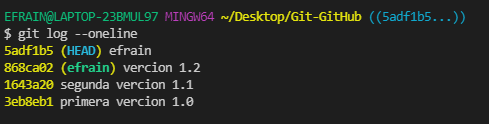
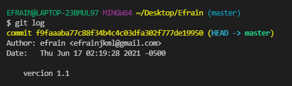

El comando git log muestra las instantáneas confirmadas. Te permite ver el historial del proyecto, filtrarlo y buscar cambios concretos. Mientras que git status te permite examinar el directorio de trabajo y el entorno de ensayo, git log solo muestra el historial confirmado.La opción "log" se puede personalizar de diversas maneras, desde filtrar las confirmaciones hasta verlas en un formato completamente definido por el usuario. A continuación, presentamos algunas de las opciones de configuración más habituales de git log.
Permite agrupar cada confirmación en una sola línea. Resulta útil para obtener información de alto nivel del historial del proyecto.
